O Time do Vale.
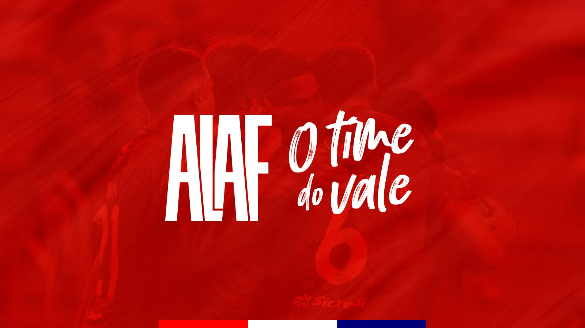
A ALAF é o único time de futsal do Vale do Taquari, e isso virou posicionamento. O Time do Vale transformou o orgulho regional em assinatura e aproximou o clube da sua comunidade.
A ideia
Posicionar o clube como símbolo da identidade regional e do espírito aguerrido do Vale, com uma assinatura em letra pincelada e o mapa do Vale como grafismo.
A identidade
Toda a identidade foi renovada para a temporada 2025, inspirada nas cores de Lajeado e em elementos que valorizam o Vale do Taquari.
O que entregamos
Identidade, cards de contratação, pré-jogo, gols e resultados, patrocínio, programa Sócio do Vale, camisetas, banners e a cobertura das partidas em tempo real.
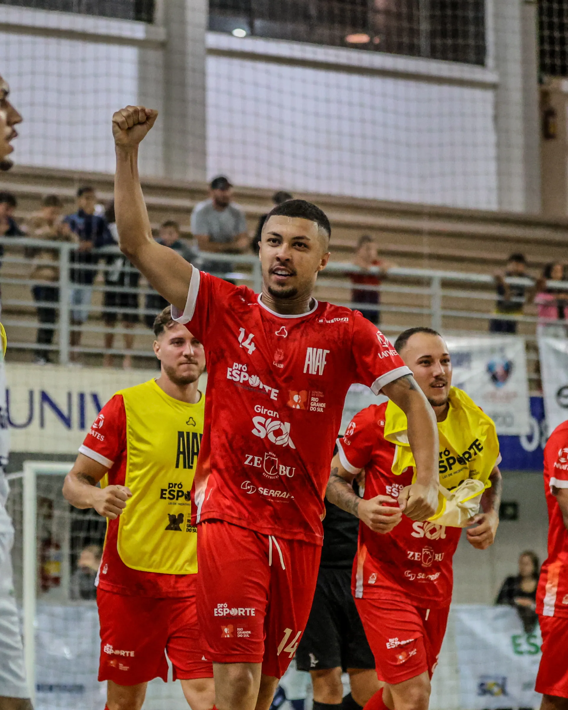
Cards para cada momento do jogo
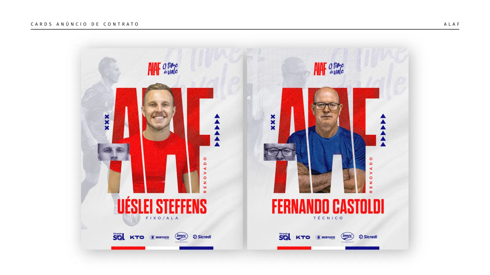
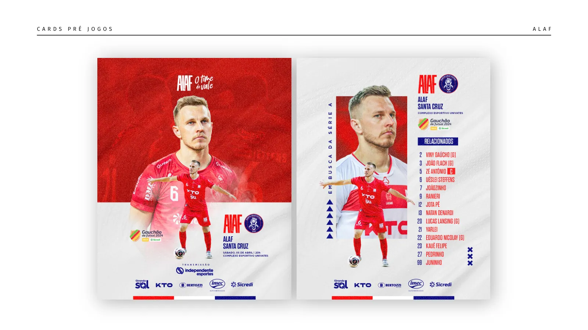
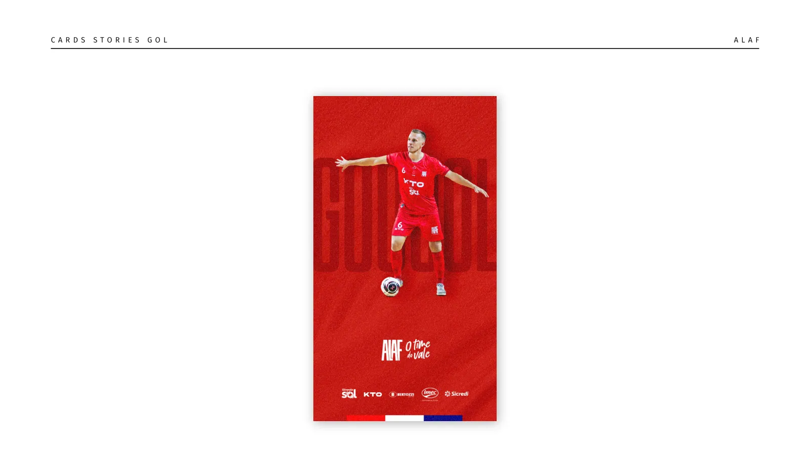
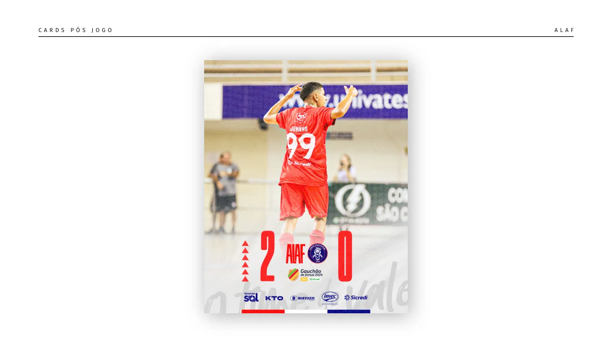
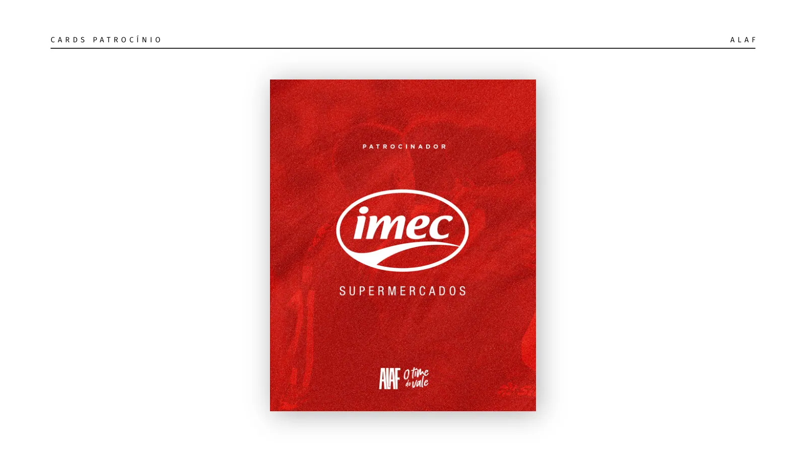
Da quadra para a arquibancada
Um programa de sócio torcedor com camisetas, planos e banners próprios.
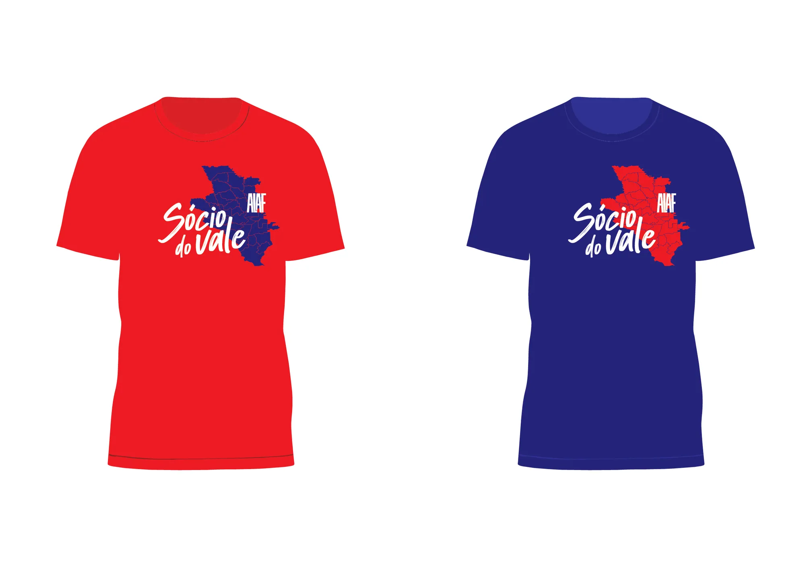
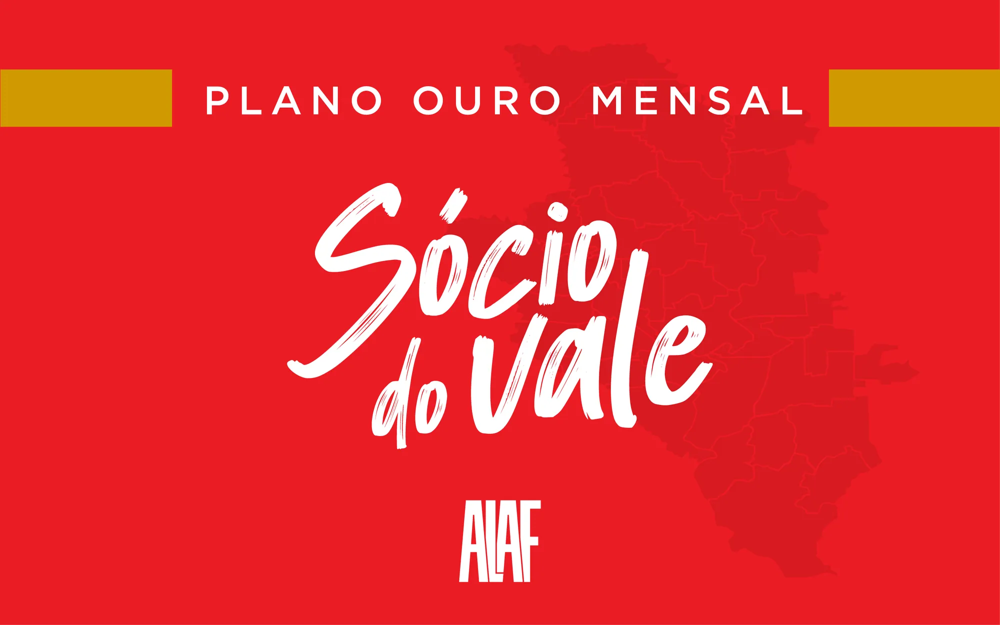
Gol, em tempo real
Atualizações rápidas e precisas durante as partidas.
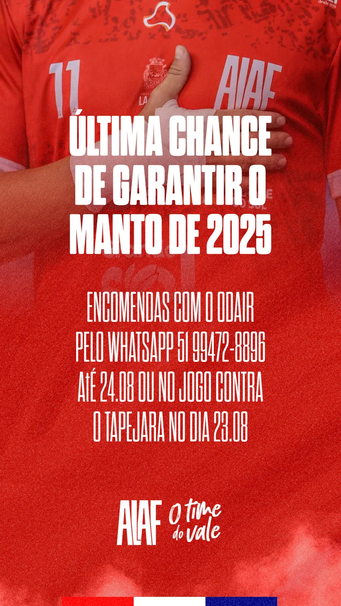
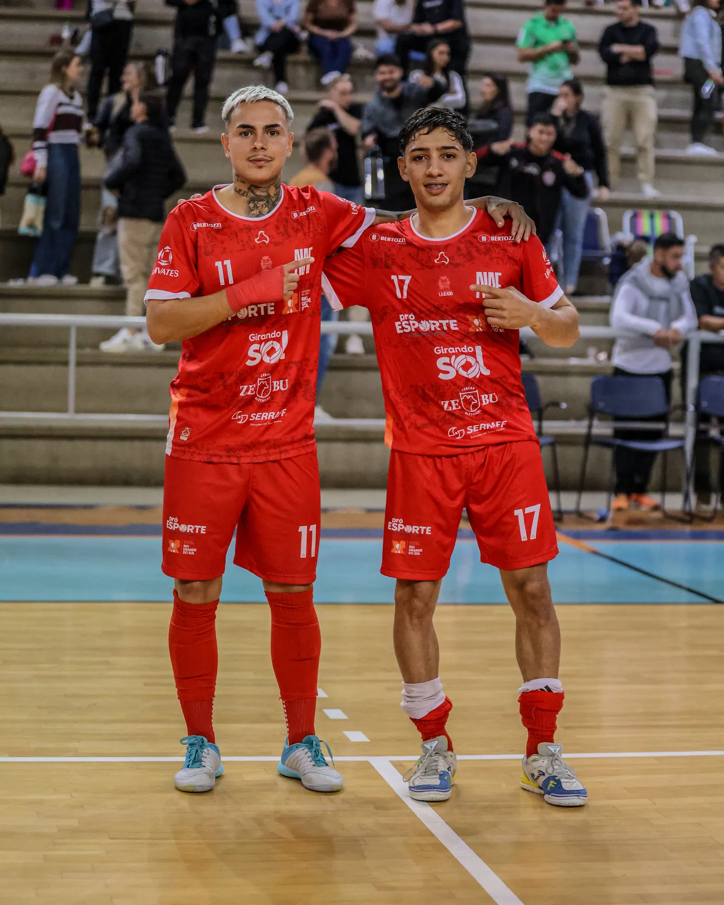
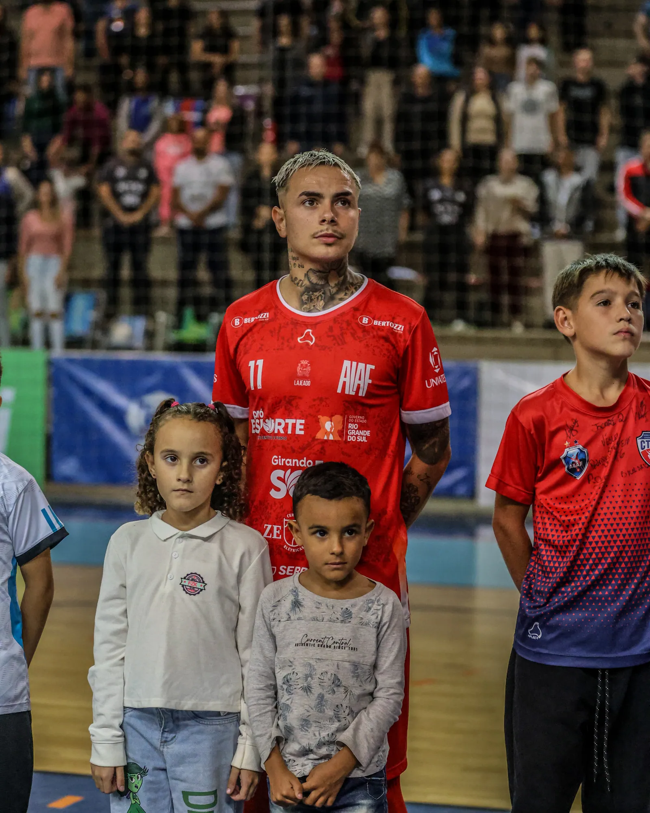
O único time do Vale, com o Vale inteiro junto.